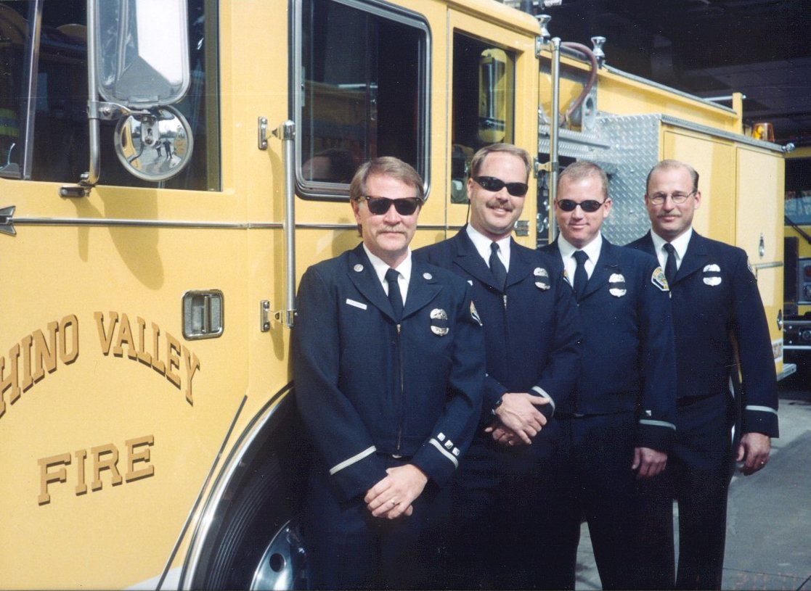
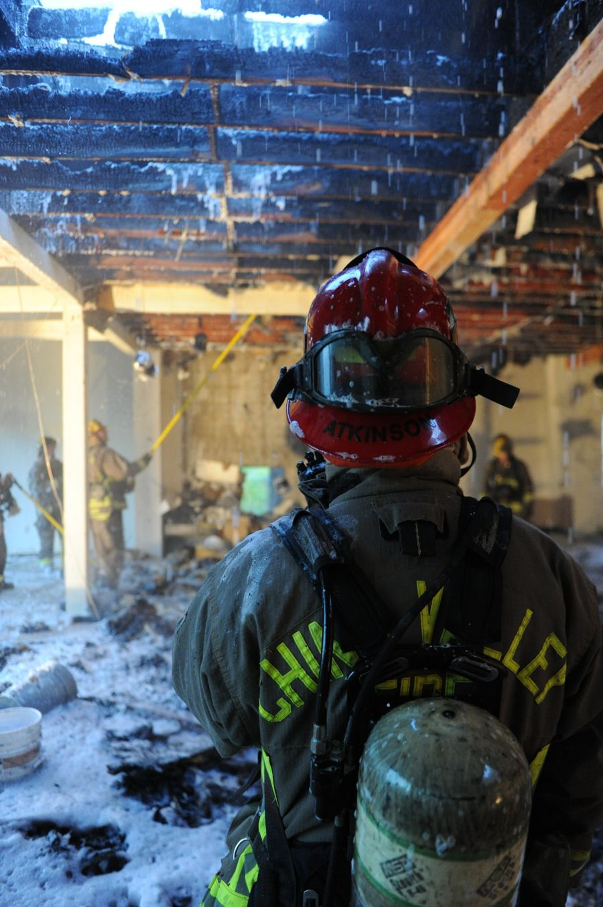
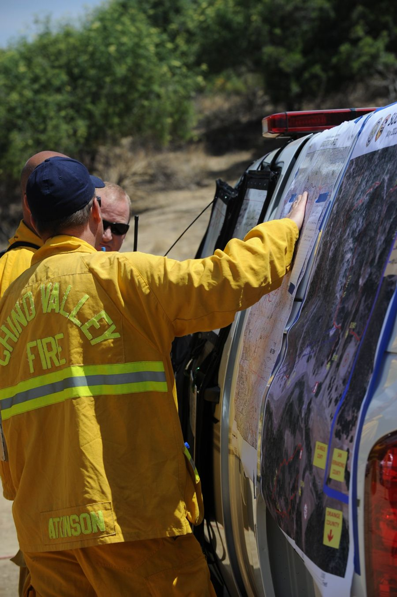

Scott Atkinson brings more than three decades of fire service leadership, executive management and emergency services experience to ARRC.
He spent his career with the Chino Valley Fire District, advancing through every rank from Firefighter to Deputy Chief. For approximately ten years as Deputy Chief, he led the district's Operations, Training and Emergency Medical Services, Support Services and Community Risk Reduction divisions.

His executive responsibilities reached well beyond the fireground. Scott oversaw an annual budget of approximately $50 million, along with fleet, facilities and information technology, fire station construction and capital improvement projects, and grant writing and administration.


Emergency medicine has run through his entire career. Scott has held paramedic certification since 1987 and most recently served as Paramedic Program Director at Mt. San Antonio College, where he led a nationally accredited paramedic training program.
A graduate of the National Fire Academy's Executive Fire Officer Program, he holds a Bachelor of Science in Fire Science with honors and is a nationally published researcher.
Outside his professional work, Scott founded six charitable programs through the Make a Child Smile initiative, volunteered with the Boy Scouts, coached youth soccer and served on professional boards and associations.
At ARRC, he helps public safety leaders strengthen organizational performance, develop effective leadership strategies and build organizations prepared for the challenges ahead.